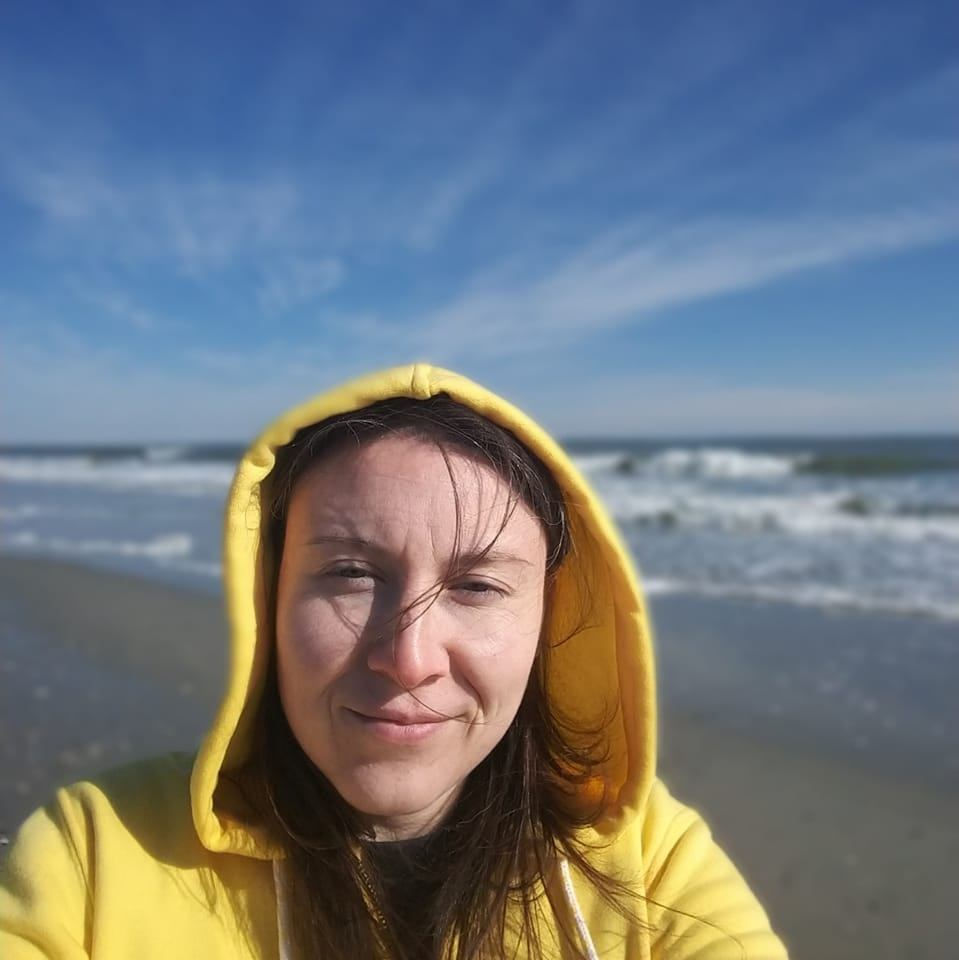

Projects, prototypes, and things I’m figuring out as I build.
A mix of web projects, browser games, creative tools, client work, and experiments shaped by real-world feedback, curiosity, and iteration.

What I Enjoy About the Process
The part I enjoy most is turning a loose idea into something another person can actually understand and use. I like thinking through the purpose of a feature, removing unnecessary steps, building the interface, troubleshooting problems, and then improving the result through feedback.
My projects often start with an everyday problem, a creative experiment, or an idea that simply sounds fun enough to explore. I enjoy working across the full process—from planning and design through development, testing, store preparation, and launch.
I’m always building and adding new work here. Have an idea for something fun, useful, or weird I should make next? Send me a suggestion by email, through Hope & Hotfixes, or on Facebook .
Captain's Book Viewer
Turn your PNG images into a digital book! Add pages one at a time, rearrange them, flip through your story, and export your finished book as a PDF. Works offline and can be installed on your phone like an app. All imported pages are stored locally on your device, with no account or cloud uploads required.
Short Story Generator
A playful web app that creates randomized short stories from user prompts and AI-generated text.
Rambling
A private Android writing app for journaling, poetry, prayers, short stories, and everyday thoughts. Entries are stored locally on the user's device rather than in an online account.
Southern Layers 3D Printing
Small business website for a veteran-owned 3D printing company. Designed with a focus on clarity, mobile usability, and simple service discovery for local customers.
ScreenITology
Founder-built website for ScreenITology LLC, a connected event display and scoreboard software company. The site communicates the product vision, services, and value proposition for arenas, schools, and live events.
Acorn Ascent
A cozy puzzle game where players solve increasingly difficult shape-based challenges to help Chip climb the tree and collect acorns.
Ferret Life
A lighthearted ferret simulation game where players explore rooms, collect items, complete goals, and unlock upgrades.
Hope & Hotfixes: A Blog
A short-form writing project where I document real-world web development decisions, client feedback loops, and calm fixes that keep projects moving without chaos.
Hope & Hotfixes: Social Channel
Short-form updates, build logs, reels, and behind-the-scenes clips from my web projects, games, and creative experiments.
Rink Putt
A hockey-inspired game that combines puck shooting with putting-style aim, rink layouts, obstacles, targets, and short arcade challenges.
Lemon Pound Cake Double Take
A pop-culture-inspired browser game where players upgrade a cake display to increase the chance of getting a double take from passersby.
Save My Putt
A mobile putting companion designed to help golfers record useful details, recognize patterns, and understand what may be affecting their performance.
Boomwave
A client-facing concept site exploring interactive mobile audio mechanics, responsive layouts, and performance-focused design.
Gen-AI Portrait Experiment
A creative AI experiment exploring how a generated portrait can be shaped by personality, conversation, and descriptive prompting.
Weather Forecast App
A simple weather app that fetches and displays current conditions for locations entered by the user.
Cut the Cheese
A cheese-shooting arcade puzzle game where players aim an antique cheese knife, bounce shots off the walls, and connect matching cheeses to clear the board.
Tide Tetris
An ocean-themed block puzzle game where players stack colorful coral pieces, complete rows, and keep the reef from reaching the top.
Revive Nature
A retro resource-management game about restoring damaged land one plot at a time. Grow plants, manage water and fertilizer, earn money, expand your property, and bring each biome back to life.
Choose Your Adventure
A branching text-based story game where player decisions lead to different paths and outcomes.
Wizard's Mana Forge
A fantasy-themed clicker game where players channel mana, summon golems, and unlock increasingly powerful magical upgrades.
Whack-a-Bug
A fast browser mini-game where players click bugs as they appear and try to build the highest score before time runs out.
AI Trip Planner
A practical AI experiment showing how travel preferences, timing, and activities can be turned into a personalized weekend itinerary.
World Clock
A clean web app that displays the current time across multiple cities and time zones around the world.
Inbox Hero
A community-management mini-game where players review incoming messages and decide which ones to approve, delete, or moderate.
Community Garden
A positive community-management game where helpful actions grow a virtual garden while spam and conflicts need to be resolved.
Coastline Cruiser
A coastal driving game where players steer a buggy, dodge beachside obstacles, and collect shark teeth along the route.
Bugged Out!
A pastel tower-defense game where players protect their base from waves of desert bugs and improve their defenses as the challenge increases.
Help Test Upcoming Apps
I’m currently gathering testers for Rambling and may invite interested testers to future Android projects. Testers help confirm that apps install correctly, work across real devices, and are understandable before public release.
The signup form asks only for the information needed to provide Google Play testing access and communicate testing instructions.
Open the Form in a New Tab →